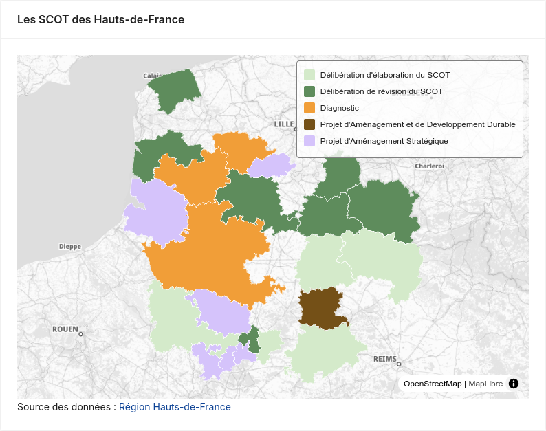

Cartographie

Propriétés
| Nom | Type | Requis | Par défaut | Description |
|---|---|---|---|---|
dataset |
string |
✳️ | — | Identifiant du dataset à utiliser. |
categoryKey |
string |
Nom de la colonne contennant les catégories | ||
title |
string |
Titre de la carte | ||
popup |
boolean |
false |
Afficher une popup au clic sur un élement. | |
title |
string |
Titre du graphique. | ||
paint |
object |
Pour définir finement le style de la couche. Voir la documentation de MapLibre. | ||
color |
string |
Couleur du symbole (sinon définie à partir de la palette). Sans effet si categoryKey ou paint sont définis. |
||
xKey |
number |
Colonne contenant la coordonnée x (longitude) | ||
yKey |
number |
Colonne contenant la coordonnée y (latitude) |
Si le dataset provient d'un flux WFS, la géométrie est automatiquement utilisée. Sinon il faut renseigner les propriétés xKey et yKey.
Exemple
import { Dashboard, Dataset, Map, Palette, Producer } from "@geo2france/api-dashboard/dsl"
<Dashboard debug>
<Palette steps={['#D5C3FB','#5E8C5C','#D4EACA','#F19E38','#745017']}/>
<Dataset
id='scot'
resource="scot_en_cours"
url='https://qgisserver.hautsdefrance.fr/cgi-bin/qgis_mapserv.fcgi?MAP=/var/www/data/qgis/applications/limites_admin.qgz'
type='wfs'
pageSize={50}
meta={{srsname:'EPSG:4326'}}
>
<Producer url="https://opendata.hautsdefrance.fr/dataset/ee965118-2416-4d48-b07e-bbc696f002c2">Région Hauts-de-France</Producer>
</Dataset>
<Map dataset="scot" categoryKey="etat_proc" title="Les SCOT des Hauts-de-France"/>
</Dashboard>
import { Dashboard, Dataset, Map, Palette, Producer } from "@geo2france/api-dashboard/dsl"
<Dashboard debug>
<Palette steps={['#D5C3FB','#5E8C5C','#D4EACA','#F19E38','#745017']}/>
<Dataset
id="points_apport"
type="datafair"
resource="donnees-eo-ocab/lines"
url="https://data.pointsapport.ademe.fr/data-fair/api/v1/datasets"
pageSize={500}
>
<Producer url="https://data.pointsapport.ademe.fr/datasets/donnees-eo-ocab">OCAB</Producer>
</Dataset>
<Map dataset="points_apport"
categoryKey="type_de_point_de_collecte"
title="Les points de collecte"
xKey="longitudewgs84"
yKey="latitudewgs84"/>
</Dashboard>